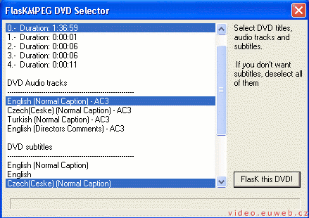
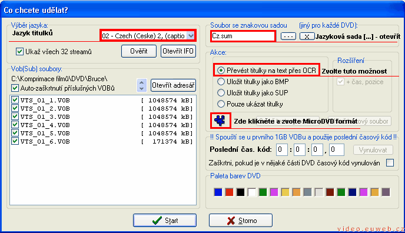
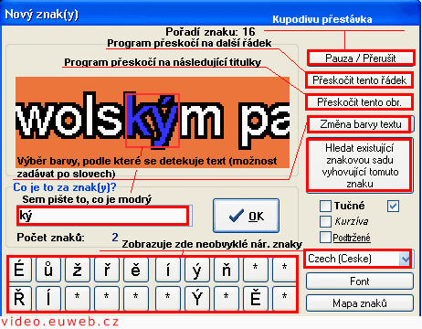

Titulky
Pokud děláte z DVD filmu film v AVI, který má titulky, existují dvě možnosti, jak je řešit
- Dát titulky přímo do videa
- Vytvořit textový soubor s titulky
Jednoznačně lepší je postup číslo dvě. Popíšu Vám ale oba, rozhodněte se sami.
Titulky přímo ve filmu
Budeme potřebovat:
- VideoCalc - kalkulačka na výpočet bitare - datového toku - videa
- FlasKMPEG - převede soubory *.vob na *.avi
- Kodeky - komprese videa, nejlepší jsou DivX a Xvid. Bohužel nemám tenhle balík kodeků a tak nevím, jestli v něm je i Fraunhofer MP3. Jestli ne, tak ho stáhněte z codeckpack.com, nebo ode mě
- A ještě nějaký přehrávač, například Windows Media Player,
Spusťe program VideoCalc a zadejte délku filmu, počet CD a audio kompresi (nejspíš 128 nebo 160kb/s). Program vypočítá datový tok. Pokud bude o hodně pod tisícem, přidejte počet CD.
Spusťe program FlasKMPEG a otevřete soubor IFO. Naskočí Vám tabulka, kde si vyberete film, zvukový doprovod a titulky.
V menu Možnosti - Vyber výstupní formát zvolte AVI Output. Dále: Možnosti - Možnosti výstupního souboru, zde vyberte audio (MPEG-Layer III) a video (DivX, Xvid, 3ivX) kodek. Nastavte do nich bitare vypočítaná ve VideoCalc.
Dále dejte Configure (je to dole pod oknem programu na listu
FlasKMPEG Control Panel) a pohrejte si.
Na kartě Video nastavte: Rozlišení stačí bohatě 640 x 480. Dejte Ukaž
výstupní výřez a klikněte na Vynulovat hodnoty. Poté Skrýt. Zbytek na
této kartě nechte, jak je.
Na kartě Audio nastavte: Dekódovat audio a Samplovací frekvenci nechte
Stejná jako u vstupu.
Na kartě Postprocesing dejte: HQ Bikubický filtr a zatrhněte
Neořezávat, Žádný letter boxing a zachovat poměr stran
Na kartě Soubory nastavíte, kam se uloží video a audio soubor (v
případě, že na kartě Audio dáte přímou kopii streamu).
Na kartě Obecné nechte všechno jak je.
Nyní můžete spustit konverzi(FlasK it!).
Ještě jednou připomínám, že tenhle postup nedoporučuju
Titulky v textovém souboru
Budeme potřebovat:
- Subrip - převede titulky do textového souboru - 250kb
- A ještě nějaký přehrávač, například Windows Media Player,
- DivX G400 - zobrazí titulky ve videu
Spusťte program Sup Rip 1.17. Klikněte na ikonku, na které je napsané VOB, po najetí myši se změní na DVD. Otevře se dialogové okno, dejte Otevřít IFO a otevřete ho. Nad tímto tlačítkem se objeví výběr jazyků, vyberte si, jaký chcete (češtinu). Vpravo je soubor se znakovou sadou, pokud to děláte poprvé, nevšímejte si toho, pokud jste to již dělali, pak klikněte na tlačítko [...] a otevřete jazykovou sadu. Podtím je sekce Akce, dejte Převést titulky na text přes OCR a klikněte na takovou modrou ikonku, která je podtím (po najetí myší zčervná). Zvolte MicroDVD formát a 25.00 snímků za sekundu. Potvrďte (zafajfkujte) možnost Přidat DivX G400 informaci o snímkování a potvrďte. Poté dejte Start.<>
{kind=link}
A teď začíná to nejhorší, co jde. Musíte k programem vybranému znaku (více znakům) napsat jejich význam (odpovídající znak).
Po dojedí se dole pod programem vytvoří soubor s titulky. Dejte Soubor - Uložit jako a uložte nejlépe pod jménem filmu. Při vypínání programu se Vás zeptá, jestli chcete uložit znakovou sadu. Uložte si ji, může se hodit.
Video na PC: Vytvořeno v roce 2005 a víc. Autorem je Jan 'Šlaha' Šlahora. Veškerá práva vyhrazena autorům článků. Pokud není uvedeno jinak, jsem to já.